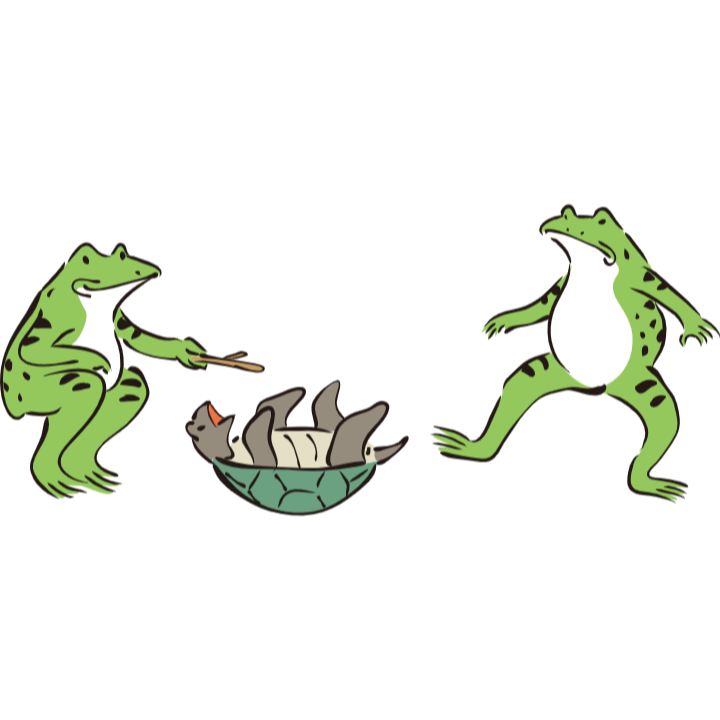

| 浦島太郎 | 乙姫 | 亀 |
|---|---|---|
| 主人公。心優しき青年 | 竜宮城の姫 | 浦島太郎を竜宮城に案内する亀 |
1分タイマーです。１分で読めるでしょうか！
あるところに、とても優しい青年の浦島太郎がいました。浦島太郎の仕事は魚を捕ることです。 ある日のことです。魚がなかなか釣れず、もう家に帰ろうとした時村の子供たちが小さな亀を囲んでいじめているではありませんか。
可哀そうに思った浦島太郎は亀を助けてあげました。 すると亀は言いました。 「助けてくれてどうもありがとうございました。お礼に竜宮城に連れて行って差し上げましょう。」 亀に言われたとおりに、浦島太郎は亀の背中に乗り竜宮城に向かいました。
しばらく海の中を進むと竜宮城が見えてきました。
竜宮城には、とても美しい乙姫様がおりました。そこでは、美味しいごちそうが振舞われ、魚たちは素敵なダンスを披露して、浦島太郎におもてなしをしてくれました。 こうして、楽しい毎日が過ぎていきました。そんな楽しい日々を過ごしていたある日、浦島太郎は、ふと我が家に帰りたくなりました。 乙姫は浦島太郎が帰ってしまうのをとても悲しんで、引き止めましたが、浦島太郎は「帰る」と言って聞きません。 仕方なく、帰ることを認めた乙姫様は浦島太郎に玉手箱を差し出しました。 「これがあれば、また竜宮城に来られます。でも、あなたの世界では、ふたを開けてはなりませんよ！絶対に！」 こうして浦島太郎は亀の背中に乗って、元居た世界へと帰っていきました。
いったい、どうしたことでしょう。 村の様子がすっかり変わってしまっています。 浦島太郎が住んでいた家も知っている村人も誰一人いません。 村にいたおじいさんに聞いて、浦島太郎は知りました。 竜宮城で過ごしたのは数日だと思っていましたが人間の世界では、何十年、何百年と経ってしまっていたのです。
悲しくなった浦島太郎は、とうとう開けてはいけないといわれていた玉手箱を開けてしまいました。
たちまち、箱の中から白い煙があふれだし、浦島太郎はおじいさんになってしまいましたとさ。
タイトルは何？
〇〇太郎：